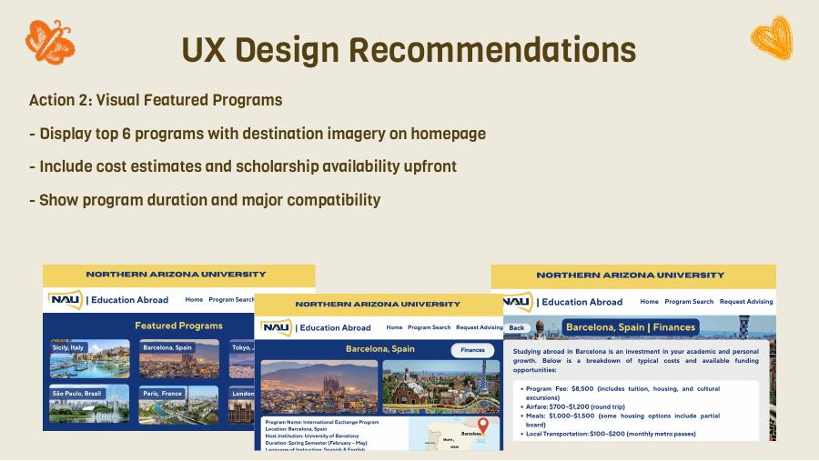
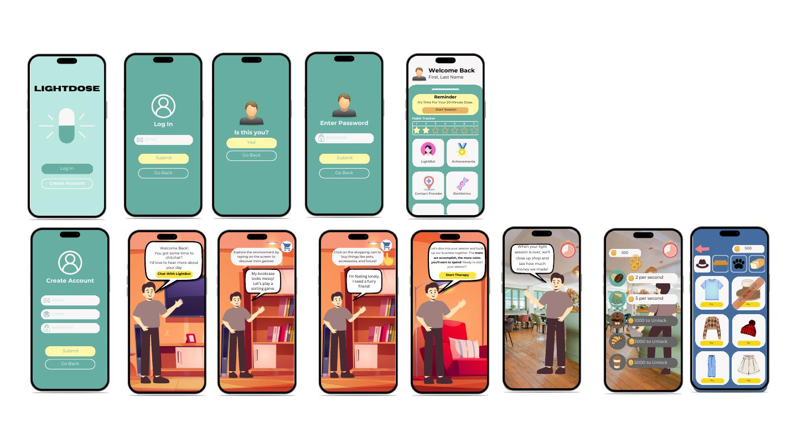
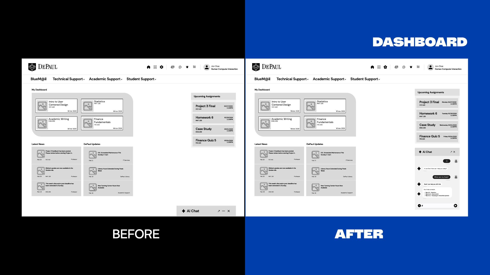
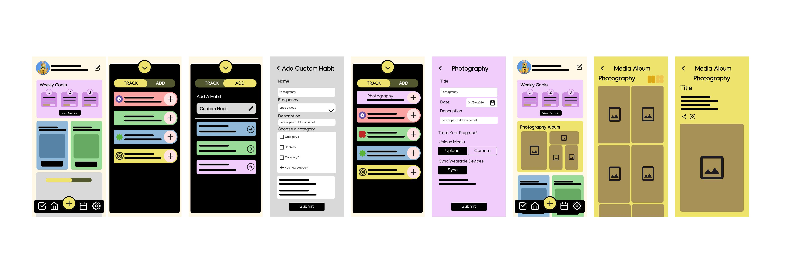

Product Designer · Ships in Code
Design that ships.
Not just specs.
HCI master's student at DePaul. CS graduate from NAU. I design, prototype, and build — closing the gap between Figma and production. Focused on EdTech and accessibility.
About Me
I design, prototype, and ship — in code, not just Figma.
I'm a Program Manager at GoSTEM — a Chicago-based STEM education nonprofit — and co-founder of Unspecified Studios, where I lead development of Kingdom of Influence, an evidence-based therapeutic game built with clinicians and neurodivergent communities.
I work across the full product lifecycle: IRB-approved user research, high-fidelity prototyping, and shipping features directly into production codebases. I'm comfortable in unfamiliar stacks and I push back when a framing is weak. Pursuing my HCI master's at DePaul (graduating 2027).
I'm drawn to EdTech, health tech, and accessibility — spaces where design decisions carry real consequences. I care about who gets centered in the product, and I build accordingly.
Selected Work
Case Studies
UXPlore — NAU Study Abroad Redesign
Students were abandoning the study abroad portal and going to advisors directly. I led two-phase research with 14 participants (faculty + students) and found: information overload made users feel "lost," financial details were nearly unfindable, and 4 of 10 students cited outdated design as a reason for distrust. Redesigned the IA, collapsed a confusing 3-tab system into one unified search, and delivered a high-fidelity prototype.

Kingdom of Influence
Co-founder and Creative Director of a therapeutic game for neurodivergent adults built on the DIR framework. Led a team of 9 across design, development, and art. Secured Fractured Atlas as fiscal sponsor and submitted $100K Unity for Humanity grant. Working with a therapeutic advisor from Game to Grow and a research advisor from NAU's PHT Lab.

LightDose — MedTech Light Therapy App
Designed and shipped a Flutter mobile app that connects to custom Arduino hardware via Bluetooth — from research through production. Owned the full UX: client interviews, gamified engagement design, and hands-on implementation in a HIPAA-compliant Firebase architecture. This went into the codebase, not just a Figma handoff.

D2L Dashboard Redesign
Redesigned DePaul's D2L learning management dashboard after conducting usability testing with 8 students. Added an AI chat feature, reorganized assignment hierarchy, and improved visual clarity. Iterated from low-fi wireframes through mid-fidelity Figma prototypes.

HaBits — Habit Tracking App
Designed a full habit tracking mobile app with custom categories, wearable sync, media upload, and a widget-based home screen. Polished end-to-end user flow from onboarding through progress visualization.
Research
Publications & Presentations
Understanding Clinician Experiences with Game-Based Interventions for Autistic Children to Inform a Future Game Platform Focused on Improving Motor Skills
Read Paper →Experiences with Broadening CS Participation in Schools that Serve Indigenous Students
NSF-funded Research-Practice Partnership for indigenous-serving schools in Arizona and New Mexico. Presented survey data showing increased teacher confidence and student interest in culturally relevant CS education.
Let's Connect
Open to Product Designer, PM, and Product Engineer roles in EdTech and health tech.
I design, prototype, and build. If you're working on a product that carries real consequences for real people, I'd love to talk.